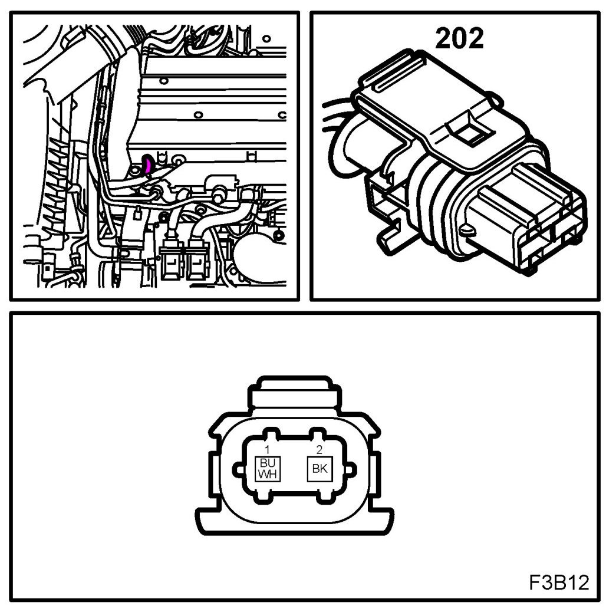
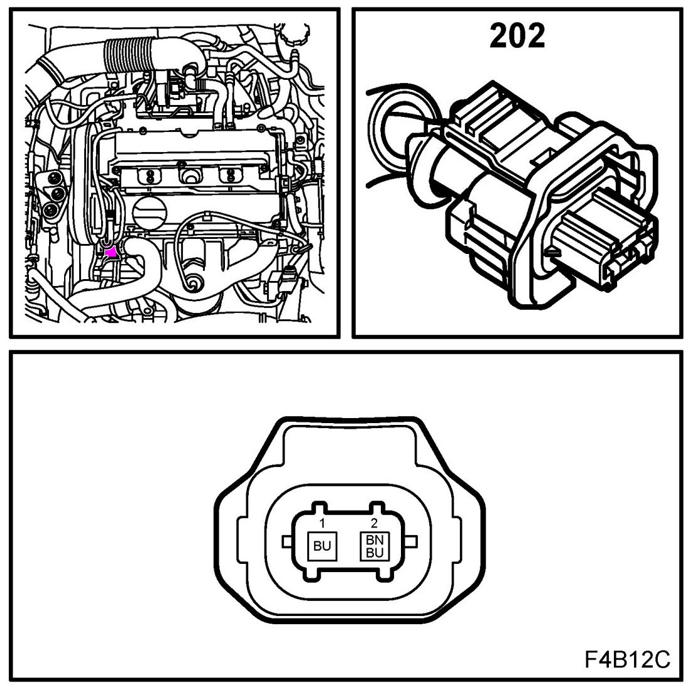
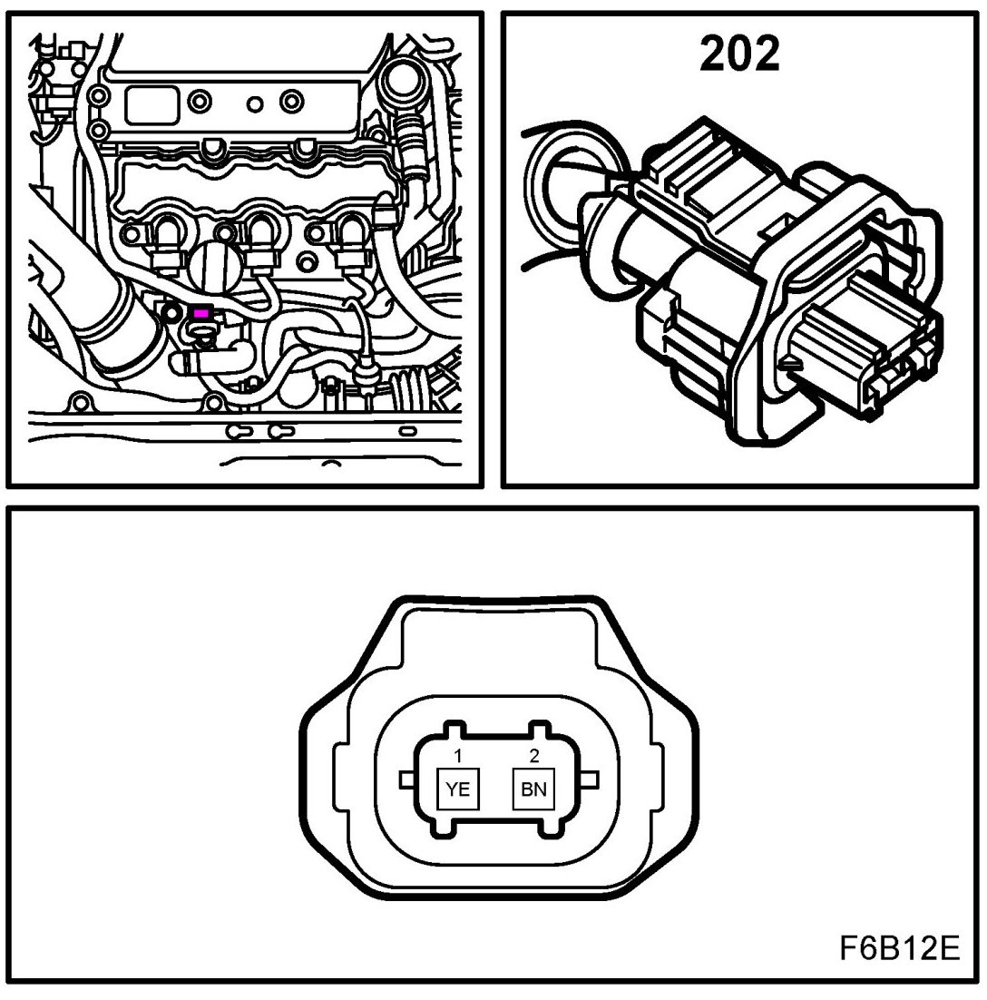
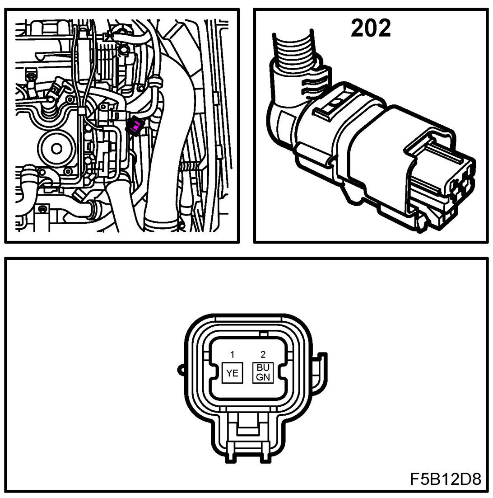
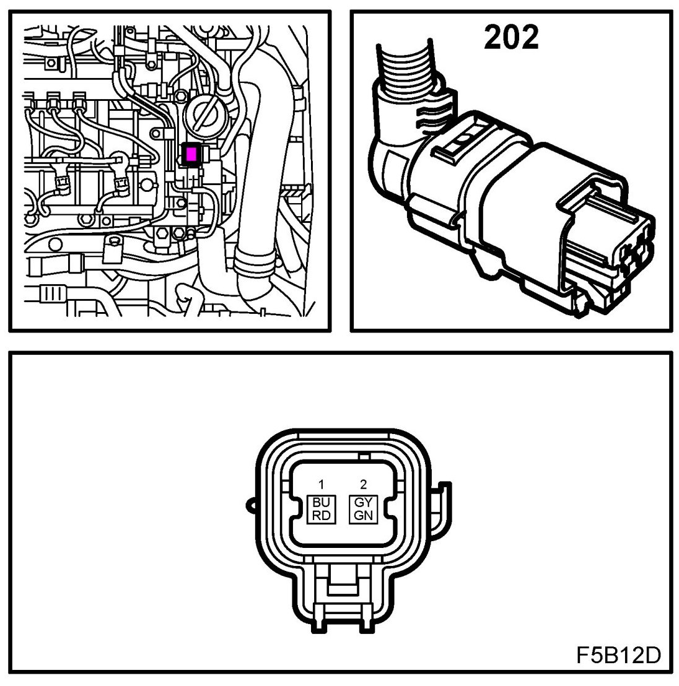

Coolant Temperature Sensor/Switch (For Computer): Locations
Coolant Temperature Sensor (202)
Location:
B207
on the engine's top right front corner

Z18XE
on the engine's top right front corner

B284
below oil pressure switch

Z19DT
on the engine's top left front corner

Z19DTH/DTR
on the engine's top left front corner
